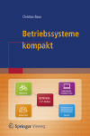

|
|

|
Die Hauptaufgabe eines Betriebssystems ist die Steuerung und Verwaltung der Betriebsmittel eines Rechnersystems sowie die Verteilung dieser Ressourcen an die Benutzer. Zu den Betriebsmitteln gehören Prozessoren, Hauptspeicher, Dateien, Ein-/Ausgabegeräte und Netzwerkdienste und generell alle Ressourcen, die mit dem Rechnersystem verbunden sind. Zusätzlich stellt ein Betriebssystem die Benutzerschnittstelle zur Steuerung des Systems sowie Schutzmechanismen, Werkzeuge, Bibliotheken und Entwicklungswerkzeuge bereit. Rechnernetze ermöglichen den Zusammenschluss eigenständiger Computersysteme zur Kommunikation und gemeinsamen Nutzung von Ressourcen. Die Kommunikation in Computernetzen erfolgt über verschiedene Protokolle, die über verschiedene Schichtenmodelle (OSI-Referenzmodell, TCP/IP-Referenzmodell, hybrides Modell) strukturiert werden können. Das Ziel dieser Vorlesung ist die Vermittlung der Grundlagen, Prinzipien, Probleme, und Lösungen, kurz gesagt der Konzepte auf denen die klassischen und modernen Betriebssysteme basieren. Zudem findet eine Einführung in die Grundlagen der Rechnernetze statt. Abschließend wird eine Auswahl bekannter Protokollen und ihre Klassifikation in die etablierten Referenzmodelle besprochen. Der Schwerpunkt des Themenbereichs Rechnernetze ist die Beschreibung des Transports von Daten durch die unterschiedlichen Protokollebenen und Übertragungsmedien. Die komplette Vorlesung (inkl. Übungen und Klausur) findet in deutscher Sprache statt. Die Vorlesungsunterlagen zum Teil Betriebssysteme basieren auf der 1. Auflage des Buches Betriebssysteme kompakt (ISBN: 978-3-662-53142-6), das im April 2017 bei Springer Vieweg erschienen ist. Die Vorlesungsunterlagen zum Teil Rechnernetze basieren auf der 3. Auflage des Buches Computernetze kompakt (ISBN: 978-3-662-46931-6), das im September 2015 bei Springer Vieweg erschienen ist. |
|
|  |
|
Diese Seite ist veraltet!
Aktualisierte und verbesserte Vorlesungsunterlagen befinden sich auf der Seite Betriebssysteme und Rechnernetze im SS2018. |
| Datum | Zeit | Raum | Veranstaltung | Inhalte |
|---|---|---|---|---|
| 13.04.2017 | 11:45-13:15 | 4-8 | Vorlesung | Besprechung von Foliensatz 1 |
| 20.04.2017 | 11:45-13:15 | 4-8 | Vorlesung | Besprechung von Foliensatz 2 (Folien 1-33) |
| 27.04.2017 | 11:45-13:15 | 4-8 | Vorlesung | Besprechung von Foliensatz 2 (Folien 34-57) |
| 04.05.2017 | 11:45-13:15 | 4-8 | Vorlesung | Besprechung von Foliensatz 3 (Folien 1-29) |
| 11.05.2017 | 11:45-13:15 | 4-8 | Vorlesung | Besprechung von Foliensatz 3 (Folien 30-42) + Foliensatz 4 (Folien 1-15) |
| 18.05.2017 | 11:45-13:15 | 4-8 | Vorlesung | Besprechung von Foliensatz 4 (Folien 16-44) |
| 25.05.2017 | Christi Himmelfahrt | |||
| 01.06.2017 | 11:45-13:15 | 4-8 | Vorlesung | Besprechung von Foliensatz 4 (Folien 45-51) + Foliensatz 5 (Folien 1-20) |
| 08.06.2017 | 11:45-13:15 | 4-8 | Vorlesung | Foliensatz 5 (Folien 21-29) + Foliensatz 6 (Folien 1-23) |
| 15.06.2017 | Fronleichnam | |||
| 22.06.2017 | 11:45-13:15 | 4-8 | Vorlesung | Foliensatz 6 (Folien 24-52) |
| 29.06.2017 | 11:45-13:15 | 4-8 | Vorlesung | Foliensatz 6 (Folien 53-63) + Foliensatz 7 (Folien 1-23) |
| 06.07.2017 | 11:45-13:15 | 4-8 | Vorlesung | Foliensatz 7 (Folien 24-27) + Foliensatz 8 + Foliensatz 9 (Folien 1-17) |
| 13.07.2017 | 11:45-13:15 | 4-8 | Vorlesung | Foliensatz 9 (Folien 18-37) |
| 19.07.2017 | 15:00-16:00 | 8-208/209/211 | Klausur | Die Klausur deckt alle besprochenen Foliensätze und Übungsblätter ab |
| Foliensätze | Übungsblätter | Lösungen | Themen |
|---|---|---|---|
| Foliensatz 1 | Übungsblatt 1 | Lösung | Organisatorisches, Literatur, Generationen von Computersystemen und Betriebssystemen, Klassifikationen, Einzelprogrammbetrieb, Mehrprogrammbetrieb, Einzelbenutzerbetrieb, Mehrbenutzerbetrieb, Kernelarchitekturen |
| Foliensatz 2 | Übungsblatt 2 | Lösung | Speicher, Speicherhierarchie, Ersetzungsstrategien, Speicherverwaltung, Real Mode, Protected Mode, virtueller Speicher |
| Foliensatz 3 | Übungsblatt 3 | Lösung | Dateien, Dateisysteme, Verzeichnisse, Blockadressierung, Journaling, Extents, Defragmentierung |
| Foliensatz 4 | Übungsblatt 4 | Lösung | Prozesse, Prozesskontext, Zustands-Prozessmodelle, Prozessverwaltung, Prozesse erzeugen und löschen, Systemaufrufe |
| Foliensatz 5 | Übungsblatt 5 | Lösung | Unterbrechungen, Dispatcher, Scheduling-Verfahren |
| Foliensatz 6 | Übungsblatt 6 | Lösung | Prozessinteraktion, Synchronisation von Prozessen, Kommunikation zwischen Prozessen, Kooperation von Prozessen |
| Beispiel zu gemeinsamen Speichersegmenten (Shared Memory Segments) | |||
| Beispiel zu Nachrichtenwarteschlangen (Message Queues) | |||
| Beispiel zu anonymen Pipes | |||
| Beispiel zu benannten Pipes | |||
| Beispiel zu TCP-Sockets (Server) | |||
| Beispiel zu TCP-Sockets (Client) | |||
| Foliensatz 7 | Übungsblatt 7 | Lösung | Grundlagen der Computervernetzung, Protokolle und Referenzmodelle |
| Foliensatz 8 | Übungsblatt 8 | Lösung | Bitübertragungsschicht |
| Foliensatz 9 | Übungsblatt 9 | Lösung | Sicherungsschicht |
| Foliensatz 10 | Übungsblatt 10 | Lösung | Vermittlungsschicht |
| Foliensatz 11 | Übungsblatt 11 | Lösung | Transportschicht |
| Foliensatz 12 | --- | --- | Anwendungsschicht |
Eine Vorlage (ZIP, PDF) für die Ausarbeitung von Werkstück A ist verfügbar. Die Verwendung dieser Vorlage ist nicht zwingend erforderlich. Die Vorlage nutzt das LaTeX-Makropaket lncs (Lecture Notes in Computer Science) des Springer-Verlags. Alle großen Linux-Distributionen bringen LaTeX-Pakete mit. Unter Windows sind die LaTeX-Distributionen MiKTeX und TeX Live bekannt. Für Mac OS gibt es MacTeX. LaTeX-Dokumente können mit jedem Editor bearbeitet werden.
| Werkstück A | Maximale Gruppengröße | Themengebiet |
|---|---|---|
| Alternative 1 | 3 Personen | Interprozesskommunikation (siehe Foliensatz 6) |
| Alternative 2 | 2 Personen | Buddy-Speicherverwaltung (siehe Foliensatz 2) |
| Alternative 3 | 3 Personen | Seiten-Ersetzungsstrategien (siehe Foliensatz 2) |
| Alternative 4 | 3 Personen | Scheduling-Verfahren (siehe Foliensatz 5) |
| Alternative 5 | 1 Person | Dijkstra-Algorithmus |
Diese Dokumentation sind ein guter Einstieg, wenn Sie wenig oder gar kein Vorwissen zu den Themengebieten Linux-Systemadministration und Shell-Programmierung haben. Diese Dokumentation ist nicht klausurrelevant.
| Linux und Shell-Programmierung - Teil 1 | Organisatorisches, Einführung, Hilfesystem, Verzeichnisse, Dateien |
| Linux und Shell-Programmierung - Teil 2 | Systemverwaltung, Zugriffsrechte, Verweise, Dateien durchsuchen, Editoren, Prozesse |
| Linux und Shell-Programmierung - Teil 3 | Datum und Uhrzeit, Ein-/Ausgaben umleiten, Zeichen zählen, Alias, Dateien suchen, Kommandos zeitsteuern |
| Linux und Shell-Programmierung - Teil 4 | Ressourcen überwachen, Sortieren, Umgebungsvariablen, Textausgaben, Mustervergleiche, Texte auswerten |
| Linux und Shell-Programmierung - Teil 5 | Grundlagen der Shell und von Shell-Skripten, Vergleichsoperationel, Kontrollstrukturen, Schleifen |
| Linux und Shell-Programmierung - Teil 6 | Arithmetik auswerten, Funktionen, Funktionsbibliotheken, Auswahlmenüs |
| Semester | Klausuren | Bearbeitungszeit | Hochschule | Lösungen | ||
|---|---|---|---|---|---|---|
| SS2017 | 60 Minuten | Frankfurt UAS | ||||
| SS2016 | 60 Minuten | Frankfurt UAS | ||||
| Ergebnis der Klausur (Werkstück B) im SS2017 |
Zu erreichen bin ich am besten per E-Mail: christianbaun@fb2.fra-uas.de
|
Prof. Dr. Christian Baun Frankfurt University of Applied Sciences (1971-2014: Fachhochschule Frankfurt am Main) FB 2: Informatik und Ingenieurwissenschaften Stand: 20.7.2017 |
|